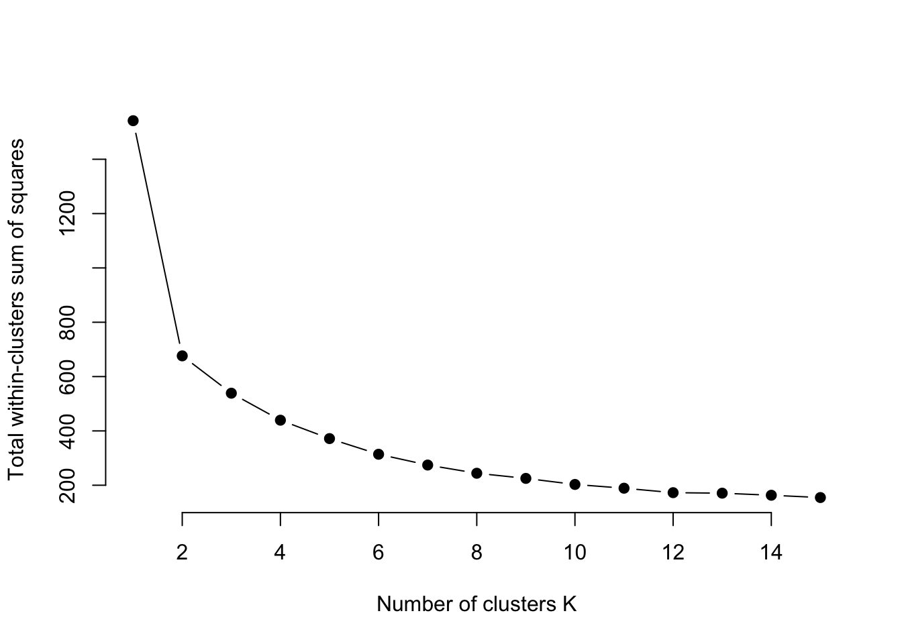
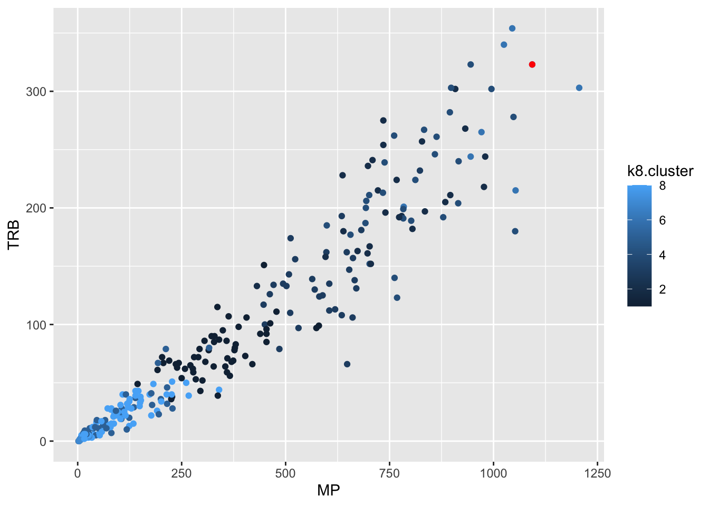
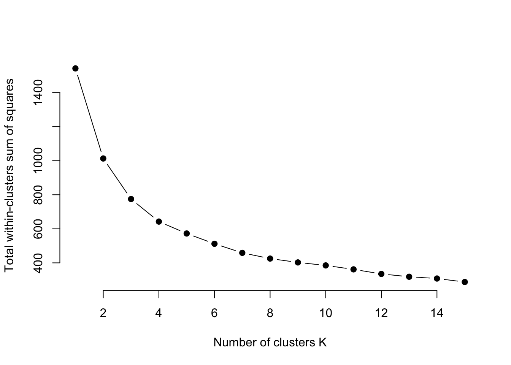

library(tidyverse)
library(cluster)
set.seed(1234)13 Clustering
One common effort in sports is to classify teams and players – who are this players peers? What teams are like this one? Who should we compare a player to? Truth is, most sports commentators use nothing more sophisticated that looking at a couple of stats or use the “eye test” to say a player is like this or that.
There are better ways.
In this chapter, we’re going to use a method that sounds advanced but it really quite simple called k-means clustering. It’s based on the concept of the k-nearest neighbor algorithm. You’re probably already scared. Don’t be.
Imagine two dots on a scatterplot. If you took a ruler out and measured the distance between those dots, you’d know how far apart they are. In math, that’s called the Euclidean distance. It’s just the space between them in numbers. Where k-nearest neighbor comes in, you have lots of dots and you want measure the distance between all of them. What does k-means clustering do? It lumps them into groups based on the average distance between them. Players who are good on offense but bad on defense are over here, good offense good defense are over here. And using the Euclidean distance between them, we can decide who is in and who is out of those groups.
For this exercise, I want to look at Derik Queen, who played one season at Maryland before decamping for the NBA. Had he stayed, he might have been among the all-time Terp greats. So who does Derik Queen compare to?
To answer this, we’ll use k-means clustering.
First thing we do is load some libraries and set a seed, so if we run this repeatedly, our random numbers are generated from the same base. If you don’t have the cluster library, just add it on the console with install.packages("cluster")
I’ve gone and scraped stats for every player last season.
For this walkthrough:
Now load that data.
players <- read_csv("data/players25.csv")Rows: 5818 Columns: 57
── Column specification ────────────────────────────────────────────────────────
Delimiter: ","
chr (10): Team, Player, Class, Height, Hometown, High School, Summary, Pos, ...
dbl (47): #, Weight, G, GS, MP, FG, FGA, FG%, 3P, 3PA, 3P%, 2P, 2PA, 2P%, eF...
ℹ Use `spec()` to retrieve the full column specification for this data.
ℹ Specify the column types or set `show_col_types = FALSE` to quiet this message.To cluster this data properly, we have some work to do.
First, it won’t do to have players who haven’t played, so we can use filter to find anyone with greater than 0 minutes played. Next, Derik Queen is listed as a center, so let’s just look at centers. Third, we want to limit the data to things that make sense to look at for Queen – things like shooting, rebounds, blocks, turnovers and points.
playersselected <- players |>
filter(MP>0) |> filter(Pos == "C") |>
select(Player, Team, Pos, MP, `FG%`, TRB, BLK, TOV, PTS) |>
na.omit()Now, k-means clustering doesn’t work as well with data that can be on different scales. So comparing a percentage to a count metric – shooting percentage to points – would create chaos because shooting percentages are a fraction of 1 and points, depending on when they are in the season, could be quite large. So we have to scale each metric – put them on a similar basis using the distance from the max value as our guide. Also, k-means clustering won’t work with text data, so we need to create a dataframe that’s just the numbers, but scaled. We can do that with another select, and using mutate_all with the scale function. The na.omit() means get rid of any blanks, because they too will cause errors.
playersscaled <- playersselected |>
select(MP, `FG%`, TRB, BLK, TOV, PTS) |>
mutate_all(scale) |>
na.omit()With k-means clustering, we decide how many clusters we want. Most often, researchers will try a handful of different cluster numbers and see what works. But there are methods for finding the optimal number. One method is called the Elbow method. One implementation of this, borrowed from the University of Cincinnati’s Business Analytics program, does this quite nicely with a graph that will help you decide for yourself.
All you need to do in this code is change out the data frame – playersscaled in this case – and run it.
# function to compute total within-cluster sum of square
wss <- function(k) {
kmeans(playersscaled, k, nstart = 10 )$tot.withinss
}
# Compute and plot wss for k = 1 to k = 15
k.values <- 1:15
# extract wss for 2-15 clusters
wss_values <- map_dbl(k.values, wss)
plot(k.values, wss_values,
type="b", pch = 19, frame = FALSE,
xlab="Number of clusters K",
ylab="Total within-clusters sum of squares")
The Elbow method – so named because you’re looking for the “elbow” where the line flattens out. In this case, it looks like a K of 8 is ideal. So let’s try that. We’re going to use the kmeans function, saving it to an object called k5. We just need to tell it our dataframe name, how many centers (k) we want, and we’ll use a sensible default for how many different configurations to try.
k8 <- kmeans(playersscaled, centers = 8, nstart = 25)Let’s look at what we get.
k8K-means clustering with 8 clusters of sizes 56, 26, 31, 28, 37, 8, 6, 66
Cluster means:
MP FG% TRB BLK TOV PTS
1 -0.1463575 0.06087454 -0.2258969 -0.2232569 -0.1338834 -0.3110702
2 1.2340831 0.56874622 1.3141886 2.1358712 0.7182216 0.8191132
3 0.6496780 0.13395291 0.4474867 0.1569653 0.5771021 0.4205940
4 1.4049575 0.25956500 1.4393448 0.4696840 1.4729983 1.5331265
5 -0.8886908 1.08843491 -0.8211314 -0.6281013 -0.8224037 -0.7114553
6 2.0601633 -0.09150173 2.1302168 1.6202760 2.7011350 3.0675147
7 -1.2088294 -3.91383033 -1.0828274 -0.8552925 -1.0785801 -0.9524554
8 -0.9047839 -0.69202775 -0.8462928 -0.6914856 -0.8336223 -0.7930986
Clustering vector:
[1] 2 3 1 8 4 1 1 2 1 1 1 8 3 3 1 5 4 8 8 1 3 3 8 6 8 8 8 8 3 5 4 2 2 8 1 2 1
[38] 6 5 1 7 1 1 5 3 8 3 1 8 2 5 1 5 5 8 1 1 4 5 8 1 5 5 4 1 1 8 1 5 8 1 1 1 1
[75] 1 4 5 1 1 3 4 3 5 6 5 8 3 1 3 2 2 8 5 5 1 5 2 1 5 8 8 8 1 3 4 6 3 8 8 8 2
[112] 8 8 8 8 3 1 8 2 5 4 1 1 2 4 8 4 8 1 8 8 7 5 8 3 3 8 3 1 1 4 3 8 1 8 3 8 8
[149] 4 3 3 3 4 5 2 6 8 7 1 2 8 5 1 8 2 1 2 1 3 4 6 4 2 4 8 8 5 4 5 5 5 4 2 5 4
[186] 2 8 8 1 8 5 8 8 3 8 1 1 8 2 1 4 8 4 5 7 8 8 2 1 5 5 8 8 8 2 5 7 1 1 5 6 5
[223] 5 3 4 4 8 7 2 8 5 8 4 3 4 3 8 4 1 1 8 6 2 8 1 4 1 8 2 8 3 1 5 3 8 2 3 1
Within cluster sum of squares by cluster:
[1] 47.05815771 54.36226600 31.47483028 33.25682799 24.38259758 21.56104504
[7] 0.03684809 31.99020794
(between_SS / total_SS = 84.2 %)
Available components:
[1] "cluster" "centers" "totss" "withinss" "tot.withinss"
[6] "betweenss" "size" "iter" "ifault" Interpreting this output, the very first thing you need to know is that the cluster numbers are meaningless. They aren’t ranks. They aren’t anything. After you have taken that on board, look at the cluster sizes at the top. Clusters 2 and 8 are pretty large compared to others. That’s notable. Then we can look at the cluster means. For reference, 0 is going to be average. So group 5 is above average on minutes played. Groups 2 is slightly below, group 1 is well above.
So which group is Derik Queen in? Well, first we have to put our data back together again. In K8, there is a list of cluster assignments in the same order we put them in, but recall we have no names. So we need to re-combine them with our original data. We can do that with the following:
playercluster <- data.frame(playersselected, k8$cluster)Now we have a dataframe called playercluster that has our player names and what cluster they are in. The fastest way to find Derik Queen is to double click on the playercluster table in the environment and use the search in the top right of the table. Because this is based on some random selections of points to start the groupings, these may change from person to person, but Smith is in Group 2 in my data.
We now have a dataset and can plot it like anything else. Let’s get Derik Queen and then plot him against the rest of college basketball on rebounds versus minutes played.
dq <- playercluster |> filter(Player == "Derik Queen")
dq Player Team Pos MP FG. TRB BLK TOV PTS
1 Derik Queen Maryland Terrapins Men's C 1093 0.526 323 39 85 594
k8.cluster
1 6So Derik’s in cluster 1, which if you look at our clusters, puts him in the cluster with nearly all above average metrics. What does that look like? We know Derik was a rebounding machine, so where do group 1 people grade out on rebounds?
ggplot() +
geom_point(data=playercluster, aes(x=MP, y=TRB, color=k8.cluster)) +
geom_point(data=dq, aes(x=MP, y=TRB), color="red")
Not bad, not bad. But who are Derik Queen’s peers? If we look at the numbers in Group 1, there’s 8 of them.
#big10 <- c("Nebraska Cornhuskers", "Iowa Hawkeyes", "Minnesota Golden Gophers", "Illinois Fighting Illini", "Northwestern Wildcats", "Wisconsin Badgers", "Indiana Hoosiers", "Purdue Boilermakers", "Ohio State Buckeyes", "Michigan Wolverines", "Michigan State Spartans", "Penn State Nittany Lions", "Rutgers Scarlet Knights", "Maryland Terrapins")
playercluster |> filter(k8.cluster == 6) |> arrange(desc(MP)) Player Team Pos MP FG. TRB BLK TOV PTS
1 Ryan Kalkbrenner Creighton Bluejays Men's C 1206 0.653 303 93 51 672
2 Derik Queen Maryland Terrapins Men's C 1093 0.526 323 39 85 594
3 Robbie Avila Saint Louis Billikens Men's C 1053 0.492 215 24 101 535
4 Bent Leuchten UC-Irvine Anteaters Men's C 1045 0.544 354 50 60 599
5 Hunter Dickinson Kansas Jayhawks Men's C 1025 0.526 340 44 74 592
6 Nathan Bittle Oregon Ducks Men's C 971 0.511 265 75 56 496
7 Noah Williamson Bucknell Bison Men's C 945 0.538 244 35 91 562
8 Carter Welling Utah Valley Wolverines Men's C 784 0.478 201 57 69 420
k8.cluster
1 6
2 6
3 6
4 6
5 6
6 6
7 6
8 6So here are the 7 centers most like Derik Queen last season. Were they the best centers in the country?
13.1 Advanced metrics
How much does this change if we change the metrics? I used pretty standard box score metrics above. What if we did it using Player Efficiency Rating, True Shooting Percentage, Point Production, Assist Percentage, Win Shares Per 40 Minutes and Box Plus Minus (you can get definitions of all of them by hovering over the stats on Maryland’s stats page).
We’ll repeat the process. Filter out players who don’t play, players with stats missing, and just focus on those stats listed above.
playersadvanced <- players |>
filter(MP>0) |>
filter(Pos == "C") |>
select(Player, Team, Pos, PER, `TS%`, PProd, `AST%`, `WS/40`, BPM) |>
na.omit()Now to scale them.
playersadvscaled <- playersadvanced |>
select(PER, `TS%`, PProd, `AST%`, `WS/40`, BPM) |>
mutate_all(scale) |>
na.omit()Let’s find the optimal number of clusters.
# function to compute total within-cluster sum of square
wss <- function(k) {
kmeans(playersadvscaled, k, nstart = 10 )$tot.withinss
}
# Compute and plot wss for k = 1 to k = 15
k.values <- 1:15
# extract wss for 2-15 clusters
wss_values <- map_dbl(k.values, wss)
plot(k.values, wss_values,
type="b", pch = 19, frame = FALSE,
xlab="Number of clusters K",
ylab="Total within-clusters sum of squares")
Looks like 8 again.
advk8 <- kmeans(playersadvscaled, centers = 8, nstart = 25)What do we have here?
advk8K-means clustering with 8 clusters of sizes 10, 54, 2, 25, 56, 63, 31, 17
Cluster means:
PER TS% PProd AST% WS/40 BPM
1 -2.80397873 -3.32576860 -0.9757080 -1.1460236 -2.779002133 -2.44465692
2 0.58549934 0.46575451 0.9259213 -0.1446943 0.564620860 0.56788941
3 3.91910490 2.61177952 -0.9430676 -1.3207832 3.141851512 3.45044891
4 1.03333914 0.26289465 2.0174109 1.7580590 0.882444035 1.09048724
5 -0.80660282 -0.61517254 -0.7087302 -0.3516492 -0.770575283 -0.81273103
6 -0.06088192 0.22607412 -0.4488703 -0.5876646 -0.008179258 0.02469389
7 -0.14080517 -0.02569281 -0.3445817 0.9967488 -0.156052595 -0.28053836
8 0.94831844 1.01849923 -0.5965913 0.2223432 1.027107675 0.72184555
Clustering vector:
[1] 2 2 6 1 4 6 6 2 5 6 6 5 2 7 6 5 2 5 5 6 6 2 6 4 5 5 7 6 4 7 2 4 2 5 7 2 6
[38] 4 6 6 1 6 7 7 2 5 2 6 6 2 6 6 3 8 1 7 5 1 2 6 6 7 3 8 2 6 8 5 6 7 6 2 8 7
[75] 5 6 4 6 5 6 2 4 2 8 4 6 5 2 6 4 2 2 7 8 8 7 6 2 7 7 5 5 6 6 6 2 4 5 5 1 7
[112] 7 7 6 6 5 2 6 5 2 6 4 6 5 6 2 5 4 7 6 5 5 1 5 5 7 6 5 5 6 6 2 6 5 5 6 2 6
[149] 5 4 2 2 7 2 8 2 4 8 1 6 4 5 5 7 5 2 7 4 7 4 2 4 2 2 2 5 5 2 6 8 6 4 2 5 4
[186] 6 5 5 5 7 8 5 6 2 5 5 7 7 2 6 2 5 2 8 1 7 5 2 6 6 5 5 6 6 2 8 1 6 6 8 4 8
[223] 6 2 4 2 6 1 2 5 8 7 2 2 2 7 5 2 7 5 6 4 2 5 6 4 6 5 4 8 2 6 5 5 5 2 7 5
Within cluster sum of squares by cluster:
[1] 61.68774 54.61697 3.33234 59.95049 83.85300 64.48091 53.46295 43.85311
(between_SS / total_SS = 72.4 %)
Available components:
[1] "cluster" "centers" "totss" "withinss" "tot.withinss"
[6] "betweenss" "size" "iter" "ifault" Looks like this time, cluster 1 is all below average and cluster 4 is all above. Which cluster is Derik Queen in?
playeradvcluster <- data.frame(playersadvanced, advk8$cluster)dqadv <- playeradvcluster |> filter(Player == "Derik Queen")
dqadv Player Team Pos PER TS. PProd AST. WS.40 BPM
1 Derik Queen Maryland Terrapins Men's C 24.7 0.591 584 11.6 0.216 9.2
advk8.cluster
1 4Cluster 4 on my dataset. So in this season, we can say he’s in a group of players who are all above average on these advanced metrics.
Now who are his peers?
playeradvcluster |>
filter(advk8.cluster == 4) |>
arrange(desc(PProd)) Player Team Pos PER TS. PProd
1 Ryan Kalkbrenner Creighton Bluejays Men's C 29.1 0.684 589
2 Derik Queen Maryland Terrapins Men's C 24.7 0.591 584
3 Bent Leuchten UC-Irvine Anteaters Men's C 28.7 0.648 582
4 Hunter Dickinson Kansas Jayhawks Men's C 25.8 0.571 558
5 Robbie Avila Saint Louis Billikens Men's C 21.0 0.605 542
6 Noah Williamson Bucknell Bison Men's C 23.5 0.594 515
7 Nathan Bittle Oregon Ducks Men's C 25.5 0.598 476
8 Essam Mostafa Middle Tennessee Blue Raiders Men's C 29.0 0.621 468
9 Kyler Filewich Wofford Terriers Men's C 24.6 0.529 452
10 Oumar Ballo Indiana Hoosiers Men's C 23.7 0.618 404
11 Payton Sparks Ball State Cardinals Men's C 26.1 0.618 404
12 Mitchell Saxen Saint Mary's Gaels Men's C 22.3 0.547 400
13 Tomislav Ivisic Illinois Fighting Illini Men's C 22.0 0.597 400
14 Carter Welling Utah Valley Wolverines Men's C 21.0 0.560 388
15 Jeff Woodward Colgate Raiders Men's C 27.9 0.655 376
16 Amar Kuljuhovic North Dakota Fighting Hawks Men's C 19.4 0.572 373
17 Jacob Hutson Northern Iowa Panthers Men's C 19.5 0.557 370
18 Christoph Tilly Santa Clara Broncos Men's C 23.5 0.623 367
19 Justin Vander Baan Lafayette Leopards Men's C 23.0 0.547 364
20 Miles Rubin Loyola (IL) Ramblers Men's C 22.1 0.683 322
21 Michael Walz Richmond Spiders Men's C 19.5 0.587 269
22 Lawson Lovering Utah Utes Men's C 15.5 0.505 262
23 Dylan Cardwell Auburn Tigers Men's C 20.3 0.627 240
24 Brandon Garrison Kentucky Wildcats Men's C 16.6 0.547 231
25 Aday Mara UCLA Bruins Men's C 28.8 0.594 216
AST. WS.40 BPM advk8.cluster
1 10.0 0.236 12.2 4
2 11.6 0.216 9.2 4
3 12.5 0.277 9.0 4
4 14.4 0.197 10.3 4
5 24.1 0.158 4.7 4
6 12.7 0.154 2.2 4
7 14.4 0.203 11.4 4
8 9.7 0.237 6.3 4
9 24.1 0.168 3.5 4
10 14.7 0.174 8.8 4
11 13.6 0.197 2.2 4
12 11.2 0.196 8.5 4
13 15.8 0.187 10.7 4
14 12.1 0.160 2.9 4
15 22.6 0.209 3.0 4
16 14.0 0.111 0.2 4
17 14.9 0.148 1.8 4
18 16.0 0.193 6.7 4
19 24.0 0.157 3.8 4
20 11.7 0.167 5.1 4
21 27.3 0.135 3.2 4
22 22.0 0.097 3.6 4
23 12.7 0.189 11.4 4
24 18.0 0.116 6.3 4
25 16.7 0.222 11.4 4Sorting on Points Produced, Derik Queen is second out of the 25 centers who land in Cluster 4. Seems advanced metrics rate him pretty highly.